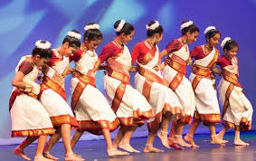

Exploring India's Culture and Heritage
Classical Dance Forms of India
Jhumar is a traditional folk dance form popular in the eastern Indian states, particularly Jharkhand, Odisha, Bihar, Chhattisgarh, and West Bengal. The name “Jhumar” is derived from the word “jhum,” which means “to sway,” and reflects the gentle, swaying movements that characterize the dance. It is performed mostly by tribal communities like the Santhal, Munda, Oraon, and Kurmi during harvest festivals, weddings, and social gatherings, symbolizing joy, unity, and celebration.
.Jhumar was performed as a ritualistic and social dance, especially during agricultural festivals and village ceremonies. It also played a significant role in wedding functions, where it served as a joyful expression of community bonding and festivity.
The history of Jhumar dance is deeply rooted in the tribal and agrarian traditions of eastern India, especially in the regions of Jharkhand, Odisha, West Bengal, Chhattisgarh, and Bihar. It originated centuries ago as a form of celebration after the harvest season, when tribal communities would gather to express their joy and gratitude to nature for a bountiful crop. The word "Jhumar" is derived from "jhum," a traditional method of shifting agriculture practiced by many tribes, which further connects the dance to their lifestyle and livelihood.
Jhumar is performed in groups, often in open fields or village grounds. The dancers form a line or semicircle, moving in sync with rhythmic steps, swaying gently, and singing traditional songs. The movements are graceful and repetitive, often accompanied by hand gestures and foot tapping. The dance is set to the beats of tribal instruments like the mandar, dhol, nagara, and flute, which give it a lively and earthy rhythm. Dancers wear colorful traditional costumes, adorned with tribal jewelry and floral accessories, adding to the aesthetic charm of the performance.
Jhumar holds deep cultural and emotional importance among tribal communities. It is closely tied to agrarian life, particularly the post-harvest season, when people celebrate the fruits of their labor. The songs sung during Jhumar performances often depict love, nature, seasons, and village life, serving as a means of storytelling and preserving oral traditions. For many tribes, Jhumar is not just entertainment—it is a symbol of cultural identity, a form of social bonding, and a way to express gratitude to nature and the gods for prosperity.